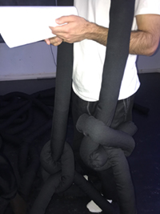
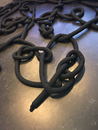
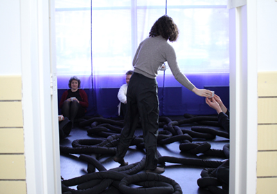
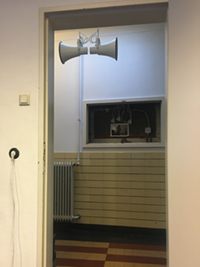

This month’s reading:1
“Radio Phantasms, Phantasmic Radio” by Allen S. Weiss.
Additional texts in the reader: “Voices from the Air” by Adrienne Rich, “The Eidophone Voice Figures” by Margaret Watts, “Radio Physiognomics” from “Current of Music. Elements of a Radio Theory” by T. W. Adorno, “The Thing” by Martin Heidegger, “About the Poetics and Politics of the Voice” from “Acts of Voicing” by Iris Dressler, “Is Audio a Thing?” from “Figures in Air: Essays Toward a Philosophy of Audio” by Micah Silver.
- reading collectively in the Meeting Room.
This month, we followed the Sonic Meditations “Breathe In Breathe Out" and "Mental Image” until the sound of the sirens went off.
Sonic Meditation meetings1 are inspired by Pauline Oliveros, who introduced them as non-verbal group work,2 as a way of attuning yourself to others, through one's own voice as well as exercising to listen to each other without the pressure of daily speech, often being marked by gendered parameters.
BREATHE IN BREATHE OUT / MENTAL IMAGE
WE SIT IN A CIRCLE WITH OUR EYES CLOSED. BEGIN BY LISTENING TO YOUR OWN BREATHING. AMPLIFY THE SOUND OF YOUR BREATH BY PLACING THE PALMS OF YOUR HANDS OVER YOUR EARS. LISTEN AS THE SOUND OF YOUR BREATH TURNS INTO THE SOUND OF WIND. IT MIGHT BE A GENTLE WIND, A GUSTY WIND, A HOWLING WIND, OR SOME OTHER KIND OF WIND. OPEN YOUR EARS GRADUALLY AGAIN, LISTEN FOR THE CALM.
GRADUALLY FORM A MENTAL IMAGE OF ONE PERSON WHO IS SITTING IN THE CIRCLE. SING A LONG TONE TO THAT PERSON. THEN SING THE PITCH THAT PERSON IS SINGING, CHANGE YOUR MENTAL IMAGE TO ANOTHER PERSON AND REPEAT UNTIL YOU HAVE CONTACTED EVERY PERSON IN THE CIRCLE ONE OR MORE TIMES.
- meetings supplied with a carpet by Nicha Keeratiphanthawong and Tabea Nixdorff.
- group work
Straw Phonation and Collective Gargle, exercises led by the WTFPC, followed by a Silent Lunch. This month’s WTFPC Incorporation Ritual, hosted by Nat Pyper, along with other WTFPC activities, can be tracked here.
The meaning of the living and the non-meaning of things converge in the muteness of the world; this meaning and non-meaning plunge there and come out, the ultimate eddy. Mundus patet: through a fissure, through an opening, a fault, a cleft come noises,1 calls as small as these apertures. I’m listening, attentive, I’m translating, I’m advancing in the scaled-down meaning and science. Mundus patet: should the world open greatly, it will launch me into its silence. The totality remains silent. Knowledge expanded in elation. White origin of meaning, fountain of joy.
- noises in the backgound, performed during the WT Food Poetics Club Silent Lunch. Voice amplified through the WT hallway speakers.
“Attitude #1” visual score by Tjobo Kho
To allow room for more general approaches to the reader prompts, each “An Phantom Voices” monthly session closes out with “Intermezzo,” an evening gathering of spontaneous collective listening, to close the week, yet also already point to the next one. Intermezzo: as in between two sonic entities.
This month with “Radio Romantique Urbain, Radio Privacy, Radio Open Ear, Radio Random, Radio Bug, Radio Alfabet, Radio Adventure,” a sonic collage in form of a collective listening session to different radio stations, shared by participants as their “first favorites.”